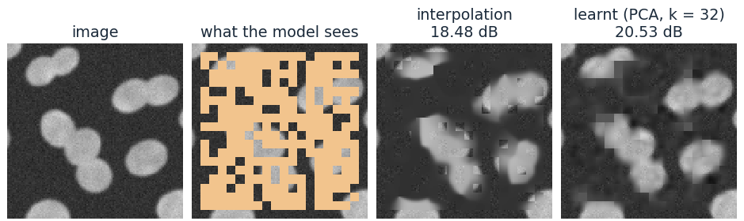
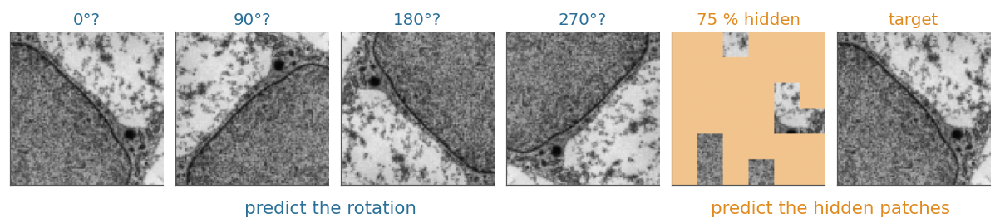
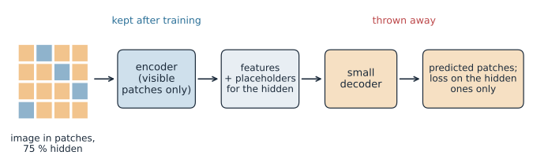
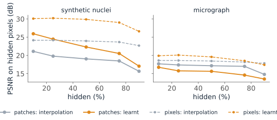
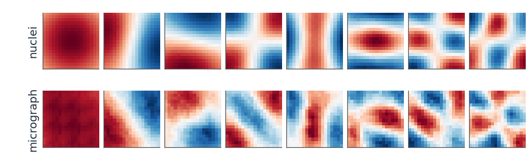
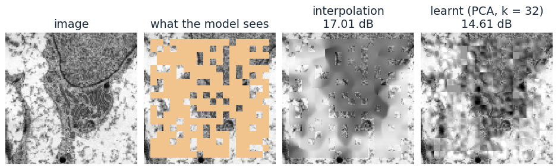

Annotating 100 cells takes an afternoon; a screen produces a million unlabelled images a night. Can a network learn useful features from the images alone?
Pretext tasks: made-up tasks whose answers come free with the images (which way is up? what is under the mask?).
Masked image modelling: hide most of the patches, predict them; why 75 % and not 10 %.
A linear masked model (PCA of windows) as a small working example: what it learns, and where prediction is impossible.
Judge the features, not the reconstructions: linear probe and nearest neighbours.
Slides titled The math give the formulas and proofs; the ideas are complete without them.
Supervised training needs labels: masks, classes, counts. Each costs an expert’s time, and every new microscope, stain or cell line needs new ones.
Unlabelled images cost almost nothing, and there are millions of them.
Self-supervised learning: train on a task whose answers are in the images themselves, then reuse what the network learnt (its features) for the real task, with few labels.
The made-up task is the pretext; the real task is the downstream task.

Pretext tasks

Rotation: which way was the image turned? Jigsaw: put shuffled tiles back in order. Inpainting / masking: fill in what is hidden. Colourisation: predict colour from grey. Next frame: predict the next image of a movie.
Each forces the network to learn something about images, because the answer is not in any single pixel.
What must the network learn, and what does it cheat with?
Rotation needs “which way is up”: easy in photographs (sky, people standing), meaningless for cells, which have no up. In microscopy, a rotation network may learn only the illumination gradient or the scale bar.
Shortcuts: the easiest cue wins. Jigsaw tiles can be ordered by matching their edges pixel by pixel, or by the vignetting of the lens; masked pixels can be filled from their direct neighbours.
So the pretext task must be hard in the right way: solvable only with the kind of knowledge we want (shapes, textures, how cells look).
The cure for shortcuts is part of the task design: gaps between jigsaw tiles, random crops, and in masking: hide whole patches, and most of them.
Masked image modelling

Cut the image into patches (the attention unit’s tokens), hide 75 %, predict their pixels from the rest; loss on the hidden patches only.
The encoder sees only a quarter of the patches: training is cheap. Afterwards the decoder is thrown away; the encoder’s features are the product.
Why hide so much?
Single pixels are easy: their neighbours are visible, and interpolation already gets 23.7 dB on the demo’s nuclei with 75 % of the pixels hidden.
Whole patches are hard: with 75 % hidden, interpolation drops to 18.5 dB. The learnt model gets 20.5 dB: it knows that nuclei are smooth blobs with sharp outlines.
At 90 % both fail: too little is left to say where the nuclei are.
Too easy a task teaches nothing; too hard a task cannot be solved. Images are redundant, so the right amount is a lot.

A linear masked model
The demo’s “learnt” model is the simplest possible masked model: PCA of windows (day 1).
Training, no labels: take thousands of 18 × 18 windows (3 × 3 patches) from other images of the same kind; their mean and principal components.
Filling a hidden patch: find the combination of mean + components that best matches the visible pixels of its window, and read off the hidden ones.
By hand: windows that only vary along (1, 1, 1, 1)/2 around a mean of 1. A new window has visible pixels 1.4 and 1.4 and two hidden: the coefficient must be 0.8, so the hidden pixels are 1.4 as well.
A masked autoencoder replaces “mean + components” by a deep network: nonlinear, far more expressive, the same training signal.
The math: the masked loss, and the linear fill
Patches \mathbf x_1, \dots, \mathbf x_n, hidden set M (random), network f:
\mathcal L = \frac{1}{|M|}\sum_{j \in M}\big\|f_j(\mathbf x_{\setminus M}) - \mathbf x_j\big\|^2 \qquad(\text{the visible patches do not count}).
Linear model of a window: \mathbf x \approx \boldsymbol\mu + U\mathbf c, U = the k leading principal components, variances \lambda_a. With visible pixels V:
and the hidden pixels are (\boldsymbol\mu + U\hat{\mathbf c})_{\setminus V}.
This is the conditional mean of a Gaussian model of the windows (covariance U\Lambda U^\top plus noise \sigma^2 I), given the visible pixels: the best linear prediction.
k = 0: the mean window everywhere (13.3 dB in the demo): the model must use the visible pixels to be any good.
Try it: fill the hidden patches
What the model learnt
The principal components of the windows are the model’s features: what varies most between windows of these images.
Nuclei: a bright blob, then edges in two directions, then curved outlines and pairs of blobs. They were learnt without a single label.
Micrograph: the brightness of the window first, then slow ramps; the fine texture is spread over hundreds of weak components.
A deep masked model learns far richer features, layer by layer, by the same principle.

Where prediction is impossible

The micrograph’s grainy texture is not predictable from the surroundings: no model can know the exact grain under a hidden patch.
With a squared error the best guess is the average of what could be there: smooth and blurry. Masked autoencoders’ reconstructions are blurry for this reason.
Here the linear model is even worse than a local average (14.6 against 17.0 dB): one global model of 760 windows of a varied image, not enough to know this region.
The reconstructions are a by-product; what counts is whether the encoder’s features help the real task.
The math: the best guess is the conditional mean
For any prediction \hat{\mathbf x} of the hidden part \mathbf x_M given the visible part \mathbf x_V:
The minimiser is the conditional mean: an average over all plausible fillings. If several textures are equally plausible, their average is a blur.
The second term is the part no model can remove: the PSNR has a ceiling set by the images, not the method.
Generative models (the diffusion day) instead draw one plausible filling: sharp, and possibly wrong.
Masked image modelling as pseudocode
repeat for every batch of unlabelled images:
cut each image into patches
choose 75 % of them at random: hidden
features = encoder(visible patches, with their position codes)
prediction = decoder(features, a placeholder for every hidden patch)
loss = mean over the hidden patches of (prediction − true patch)²
update encoder and decoder by backpropagation
keep the encoder
Judge the features, not the reconstruction
After pretraining, freeze the encoder and use its features for the real task, as in the attention unit:
a linear probe: logistic regression on the frozen features, trained with a few labels;
k nearest neighbours: a new cell gets the label of the most similar labelled cells.
Good features: high accuracy with few labels. A sharper reconstruction does not guarantee that.
Or fine-tune the whole encoder with the labels (fine-tuning day).
The next unit learns features without predicting pixels at all: by comparing views.
features (five painted strokes)
probe Dice
raw 9 × 9 patches
0.39
hand-made filter stack
0.53
tiny self-supervised encoder
0.55
From the attention unit’s demo (synthetic nuclei among debris). A tiny encoder is no better than a good filter stack; large ones are.
Summary
Idea
In one line
Pretext task
a made-up task with free answers, to learn features from unlabelled images
Shortcuts
the easiest cue wins: design the task so that only the wanted knowledge solves it
Masked image modelling
hide 75 % of the patches, predict them; loss on the hidden ones
Why so much
hidden pixels are filled by interpolation; hidden patches need knowledge of the images
Limits
unpredictable texture: the best guess is a blurry average
Evaluation
features, by a linear probe or nearest neighbours, not reconstructions
Next: learning by comparing two views of the same image.